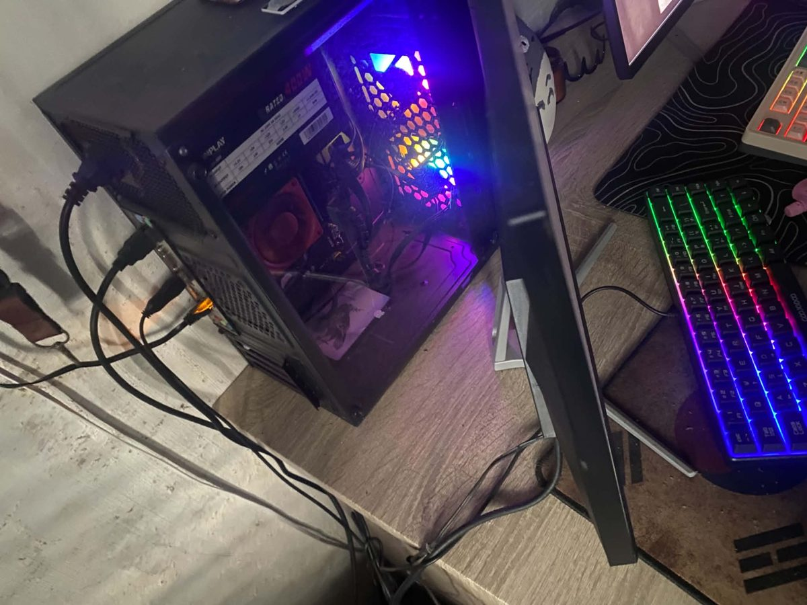
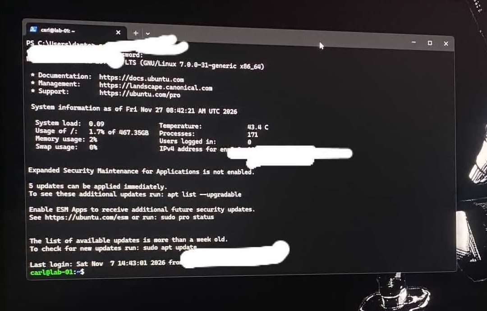
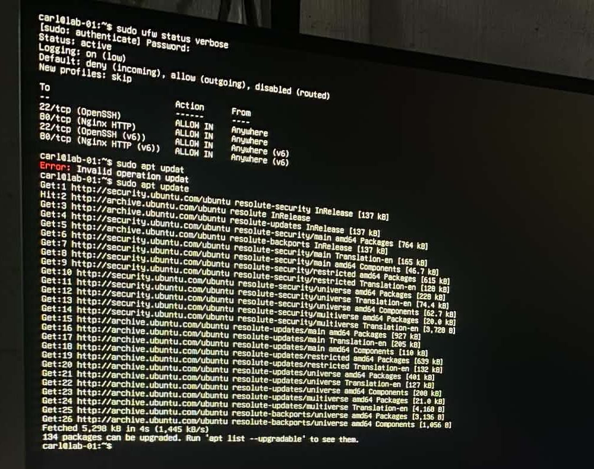

ABOUT
Home Lab Server
A spare PC I turned into a Linux server on my home network. I manage it remotely over SSH, host a web page with Nginx, and protect it with a ufw firewall.
- Role
- Solo project
- Timeline
- 2026 – Present
- Hardware
- AMD A8-7680, 16 GB RAM, 477 GB SSD
- Built with
- Ubuntu Server 26.04 LTS, SSH, Nginx, ufw
- Status
- Running on my home network
Why I built it
I wanted real hands-on practice with Linux and networking for IT support work. I had practised in Cisco Packet Tracer and on a virtual machine, but I wanted a real machine on a real network that I set up, break and fix myself.
What I built
- Server — An old Windows 10 PC, wiped and rebuilt as a Linux server running Ubuntu Server. It has no desktop, only the command line.
- Remote access — I manage it from my Windows PC over SSH, so I don't need to sit at the server to work on it.
- Web server — Nginx serves a web page that other computers on my network can open in a browser.
- Security — A ufw firewall blocks all incoming traffic except SSH and the website.
How I built it
I installed Ubuntu Server 26.04 LTS and set up OpenSSH during the install. After connecting the server to my router with an Ethernet cable, I gave it a reserved address (a DHCP reservation) so its IP address doesn't change. Then I installed Nginx and opened its page from my Windows PC's browser. Last, I turned on the ufw firewall, allowed only SSH and web traffic, and checked that my SSH connection still worked.
Problems I fixed
- The network card disappeared — After I moved the PC, Linux couldn't see its network card at all, even though the BIOS said it was on. I thought it was dead and planned to use a USB network adapter instead. The real cause: motherboards keep the network card powered for Wake-on-LAN, so restarting never reset it. A full power drain (unplugging the PC and holding the power button for 30 seconds) brought it back. I also fixed the network settings, which were missing DHCP.
- My Windows PC wouldn't answer ping — At first, ping said "Destination Host Unreachable" because my PC's address had changed. With the new address, ping got no replies at all: Windows Firewall blocks incoming ping by default. I added a firewall rule to allow it and got 0% packet loss.
Screenshots


What's next
I want to turn the server into my own private file storage, and learn to put a server online in the cloud so it can be reached from anywhere.